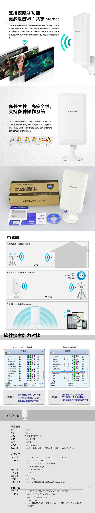

接收能力超强的无线网卡(LF-D721)
发布时间：2014-11-6编辑：80eboy
超强接收WIFI能力，可以接收到附近的商场、奶茶店、咖啡店、宾馆酒店、学校、公司等WIFI信号免费上网， 也可以连接家庭路由器的WIFI信号；是电脑上网的神器。
拉法联科公司简介
深圳市拉法联科技术有限公司（以下简称“LAFALINK”）是一家致力于网络通信设备研发、制造、销售的高新技术企业，LAFALINK始终秉承着为大众提供更加便利的网络互联和Internet接入方式，满足人们在生活、工作、娱乐上日益增长的，随时随地的网络使用需求，提供高品质、高性能价格比的全面设备解决方案。
下面是官网介绍，介绍的是LF-D720，我们淘宝卖的是它的升级版LA-D721
